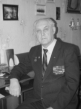
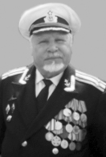
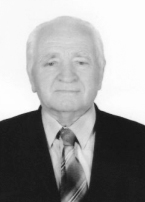
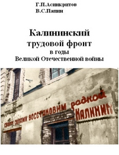
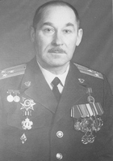

НОВЫЕ КНИГИ О ВОЙНЕ
В конце 2010 г. - начале 2011 г. в Твери прошли презентации трех новых книг о боевых действиях войск Красной Армии, партизанском движении и событиях в тылу на территории Калининской области в годы Великой Отечественной войны.
Военно-историческое исследование участника Великой Отечественной войны, лауреата Государственной премии СССР, доктора технических наук, профессора генерал-майора в отставке СИРОТИНИНА Е.С. «Партизанское движение на Калининской земле в годы Великой Отечественной войны (июль 1941 г. – июль 1944 г.)» посвящено рассмотрению состояния теории и практики партизанской войны в предвоенные года, общему ходу партизанской борьбы на Калининской земле, формам и способам ведения партизанских действий и условиям, в которых они велись. По мнению автора, актуальность дальнейшего изучения этой темы заключается в том, что «...при ведении вооруженной борьбы всегда бывают успешные действия, частично успешные и неудачи. Все это приводит к необходимости изучения этой составной части вооруженной борьбы, чтобы не повторять в будущем ошибок, которые могут быть при организации и ведении партизанской борьбы. Для этого необходимо разобраться, в первую очередь, в принципах организации и ведения партизанской войны, установить общий ход этой борьбы, не забывая, что это борьба двухсторонняя, и только после этого можно будет понять, что удалось осуществить успешно, что менее успешно (уровень успеха), а что не удалось, их причины».
В книге отмечается, что развертывание партизанского движения происходило в сложных условиях. Страна оказалась слабо подготовленной к партизанской борьбе, и ее развертывание началось практически с нулевого уровня. Тем не менее, советской власти удалось в очень короткие сроки развернуть партизанское движение до масштабов, которых не знала мировая история. Оно имело невиданный пространственный размах, массовость. Всего за годы войны в тылу врага сражались свыше 1 млн. партизан, которые уничтожили, ранили и захватили в плен свыше 1 млн. фашистов и их пособников, вывели из строя свыше 4 тыс. танков и бронемашин, 65 тыс. автомашин, 1100 самолетов, разрушили и повредили 1600 железнодорожных мостов, пустили под откос свыше 20 тыс. железнодорожных эшелонов. Действия на коммуникациях – это не только потери, но и снижение эффективности маневренных сил вермахта (танковых, механизированных войск и авиации). Действия этих войск стало труднее осуществлять в нужное время, на нужную глубину и с необходимым темпом.
Таким образом, противник терял свое основное качество войск: маневренность и внезапность, которые были ему чрезвычайно нужны как при ведении молниеносной войны, так и при огромном пространственном размахе ведения боевых действий.
Автор работы приходит к выводу, что анализ партизанского движения во время Великой Отечественной войны имеет значение не только для установления исторической правды, героического прошлого нашего народа, но и для современных условий и будущего.
Книга известных в области авторов ветерана атомного флота СССР, капитана 2 ранга в отставке Г.П.АСИНКРИТОВА и кандидата исторических наук, доцент, профессор Международного Независимого эколого-политологического университета В.С.ПАПИНА «Калининский трудовой фронт в годы Великой Отечественной войны» обращает на себя внимание названием, в котором присутствует слово «фронт». Невольно возникает вопрос – почему фронт? Ответ на этот вопрос находим в содержании. Авторы убедительно показали, что, выполняя различного рода работы, труженики тыла находились в неимоверно трудных условиях, не уступавших, а порой и превышавших по своей психической и физической напряженности условиям ратных дел.
Книга содержит достоверные факты многогранной деятельности жителей Калининской области по обеспечению армии всем необходимым для ведения вооруженного противоборства с фашистскими захватчиками.
Эта книга о трудовых подвигах, о перенесенных народом страданиях, о жертвах ради общей победы, о патриотизме, выражающемся в конкретных делах в ущерб собственного благополучия. В книге приводятся факты любви простых людей к своей малой и большой Родине.
Авторы убедительно повествуют о том, как в начале войны трудящиеся фронтовых районов самоотверженно спасали государственное и общественное добро: перебазировали на восток оборудование промышленных предприятий, налаживали производство на новом месте, эвакуировали колхозные стада, вывозили культурные ценности. Многие тысячи жителей области участвовали в строительстве оборонительных сооружений не только на территории области, но и в Подмосковье, под Ленинградом.
Книга Асинкритова Г.П. и Папина В.С. содержит информацию о том, как в неимоверно трудных условиях военного времени рабочие фабрик и заводов перестраивали производство на выпуск военной продукции, работали день и ночь, давали фронту снаряды, вагоны и платформы, миномёты, инструменты для сапёров и многое, многое другое. Не забыли авторы и о том, как после освобождения области труженики тыла восстанавливали фабрики и заводы, строили жильё, возрождали разрушенные города.
Особое внимание авторы уделяют беспримерному подвигу колхозного крестьянства, представленному во время войны женщинами, стариками и подростками. О том, как они вели сложное многоотраслевое хозяйство, поставляли армии хлеб, картофель, овощи, заботились о питании для раненых.
Достоверность фактов героического труда наших земляков подтверждает высочайшая награда, орден В.И. Ленина, полученная областью в 1966 году.
В военно-историческом исследовании доктора военных наук, профессора М.Д. ХЕТЧИКОВА «Оборонительные и контрнаступательные операции, проведённые в 1941 году на тверской земле» впервые представлена на публичное обсуждение совокупность мало изученных оборонительных и контрнаступательных операций, проведённых войсками 22-й, 27-й, 29-й, 30-й и 31-й армий в границах Калининской области в 1941 году.
По глубокому убеждению автора история боевых действий на территории Калининской (Тверской) области во многом уникальна, однако за прошедшие после войны 65 лет не создано фундаментального военно-исторического труда, формирующего общее полномасштабное позитивное представление о ходе и результатах противоборства советских и немецких войск. Такая задача не ставилась и не решалась. Вследствие этого за последние 20 лет, под влиянием западных и прозападных публикаций, сформировано искажённое представление о содержании и результатах военных действий в границах Калининской (Тверской) области, акцентирующее внимание на негативных аспектах сражений за ржевско-вяземский плацдарм, 80% которого находилось на территории Смоленской и Московской областей. Совокупность эффективных оборонительных и контрнаступательных операций, проведённых войсками 22-й, 27-й, 29-й, 30-й и 31-й армий на западных границах области с июля по октябрь 1941 оставалась долгое время неисследованной. Также неисследованными оставались наступательные операции Калининского, 1-го и 2-го Прибалтийских фронтов 1944 года, успешно завершенные освобождением области от фашистских захватчиков. Именно эта совокупность незаслуженно забытых оборонительных и наступательных операций создаёт объективное представление о тверской земле, как земле воинской славы.
Отсутствие фундаментального научно-исторического труда, обладающего высокой достоверностью, является одной из причин искажённого представления о том, что тверская земля прославилась в Великой Отечественной войне не эффективными операциями, а огромными потерями войск. В действительности, потери советских войск в боевых действиях на тверской (калининской) земле значительно меньше потерь, имевших место в границах Смоленской, Брянской, Новгородской областей.
Предлагаемый читателю военно-исторический труд частично устраняет недоработки прошлых лет, способствует восстановлению исторической справедливости.
Все книги выполнены в рамках целевой социальной программы «Тверская земля – земля воинской славы». С достаточными на то основаниями их можно считать научно-методическим фундаментом, необходимым для популяризации истории Тверской области с помощью современных информационных технологий на положительных примерах. Они предназначены не только для специалистов, занимающихся историей Великой Отечественной войны и начинающих военных исследований, но и широкому кругу читателей, интересующихся историей боевых действий в границах Калининской области, могут быть полезны активистам, проводящим Уроки мужества в образовательных учреждениях. Их можно и нужно использовать для патриотического воспитания жителей области, а также для создания информационно ёмких туристических маршрутов по местам боев. Тираж книг не велик: от ста до пятисот экземпляров. Но познакомиться с их электронными версиями можно на сайте тверского «Военно-исторического Интернет-центра» http://www.history.tver.ru/sr/index.html .
На фото: Е.С. Сиротинин, Г.П.Асинкритов и В.С.Папин, обложка книги «Калининский трудовой фронт…», М.Д.Хетчиков |